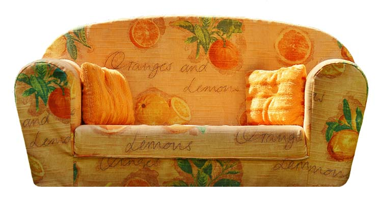

THE CHOICE

(In truth, a large chunk of your day-frankly almost the whole day-has been spent ruminating on whether your choices on how to spend your time are efficient enough, productive enough and whether or not you are succeeding in extracting as as much value as possible from your time.)
As you finally fall into your couch, having no more energy left in your body, you are confronted with a choice:
- Go to bed: simply go to bed without thinking whatsoever about tonight and the next day; you won't set an alarm and you will think about the day and what you need to do when you wake up; you are too tired to do anything and all you want to do is (as much as it is possible) to forget about the pressure of time.
- Watch a movie: something that wasn't an assigned watch for any of your classes, one that is purely for fun, one that would (as much as it is possible) help you to forget about the pressure of time.
- Go out with your friend: you think that a couple of drinks, a few laughs, a game or two of pool and conversations about anything but your final projects would help you to (as much as it is possible) forget about the pressure of time.
- Devise a constructive plan for the next day: you think that in order to be as efficient as possible, a to-do list would help you put yourself in a productive mood and the concise plan would harness that momentum into the next day, everything would have to done according to the plan that way you would not lose any time the next day and thus you would (as much as it is possible) forget the pressure of time.
Time elapsed: 00:00:00